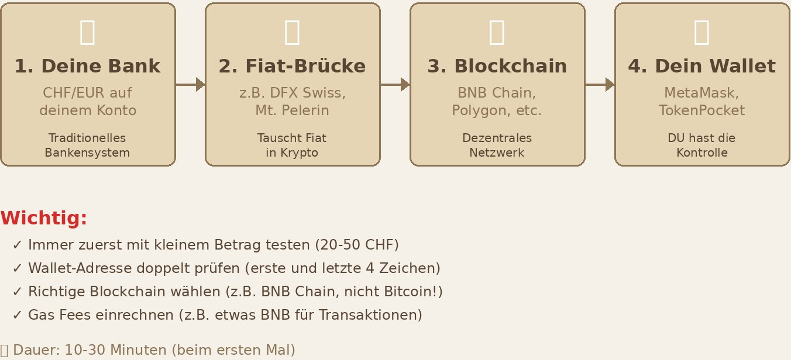

Kapitel 5 · Phase 3
Jetzt hast du dein Wallet. Zeit, es mit Leben zu füllen. Aber bevor du loslegst: Wir fangen klein an. SEHR klein.
Spezialisierte Dienste, die eine direkte Brücke zwischen deinem Bankkonto und der Blockchain bauen. Du überweist Fiat (CHF/EUR), bekommst Krypto direkt in dein Wallet.
✓ Vorteile
✗ Nachteile
Plattformen wie Coinbase, Kraken, Binance.
✓ Vorteile
✗ Nachteile
Bargeld rein, Bitcoin raus.
✓ Vorteile
✗ Nachteile
💡 Meine generelle Empfehlung: Nutze eine Fiat-Krypto-Brücke wie dfx.swiss. Das ist der direkteste und sicherste Weg – dein Geld geht sofort in DEIN Wallet, ohne Zwischenstopp. Du behältst die Kontrolle von Anfang an.

dfx.swiss ist ein Schweizer Anbieter und eine der einfachsten Möglichkeiten, CHF direkt in Krypto zu tauschen – ohne CEX, direkt in dein Wallet. Nutze meinen Referral-Link für bessere Konditionen:
DFX Referral-Link
https://dfx.swiss/app/services/?code=167-982
1% – 3% je nach Anbieter und Methode. Kreditkarte ist teurer als Banküberweisung.
Bei Ethereum kostet eine einfache Transaktion heute meist nur noch wenige Cents bis rund $0.50 – ein dramatischer Rückgang gegenüber früheren Jahren. Bei hoher Auslastung kann es aber kurzfristig auch auf $10–50 steigen. Bei anderen Chains (z.B. BNB Chain, Polygon) sind es durchgehend nur wenige Cents.
Krypto-Transaktionen können manchmal Stunden dauern, besonders wenn das Netzwerk überlastet ist. Lösung: Geduld. Prüfe den Status auf einem Block Explorer (z.B. etherscan.io für Ethereum). Solange die Transaktion "pending" ist, ist alles okay.
Wenn du eine Adresse falsch eingibst, ist das Geld weg. Unwiederbringlich. Lösung: IMMER copy-paste. IMMER die ersten und letzten 4 Zeichen prüfen. IMMER erst testen.
Meilenstein
Wenn du deinen ersten erfolgreichen Transfer in dein eigenes Wallet gemacht hast – herzlichen Glückwunsch. Du bist jetzt offiziell deine eigene Bank. Das Gefühl ist unbezahlbar.
Du hast deine ersten Tokens im Wallet. Herzlichen Glückwunsch – das ist ein grösserer Schritt, als er vielleicht aussieht. Jetzt stellt sich die nächste Frage: Was machst du damit? Krypto ist kein statisches Konto. Du kannst Tokens empfangen, versenden, gegen andere tauschen oder auf eine andere Blockchain übertragen.
Tokens empfangen bedeutet: Jemand schickt dir Krypto an deine Wallet-Adresse – egal ob eine Bekannte, eine Plattform oder du selbst von einem anderen Wallet. Tokens senden ist das Gegenteil: Du überweist Krypto an eine andere Adresse. Das Prinzip ist so einfach wie eine Banküberweisung – aber mit einem entscheidenden Unterschied.
Bei der Bank gibt es Storno, Kundenservice und Rückbuchungen. In der Blockchain gibt es das nicht. Was weg ist, ist weg. Deshalb gelten hier eiserne Grundregeln:
⚠️ Eine Fehlüberweisung ist endgültig. Kein Kundenservice, kein Storno, kein Rückruf. Genau deshalb: Testen, prüfen, testen.
Swappen bedeutet: Du tauschst einen Token direkt gegen einen anderen – ohne Börse, ohne Registrierung, ohne KYC. Alles passiert direkt in deinem Wallet oder über eine dezentrale Börse (DEX). Du bist dabei immer der Eigentümer deiner Assets.
Einen anderen Token kaufen
Gewinne sichern
Gas Fees möglich machen
| Wo | Wie | Für wen |
|---|---|---|
| MetaMask (intern) | Direkt in der Wallet, vergleicht automatisch DEXs portfolio.metamask.io |
Einsteiger – einfachste Option |
| PancakeSwap | DEX für BNB Chain – im MetaMask-Browser aufrufen pancakeswap.finance |
BSC-Nutzer |
| Uniswap | DEX für Ethereum/Polygon app.uniswap.org |
ETH/Polygon-Nutzer |
| THORSwap | Cross-Chain Swaps ohne Wrapped Tokens app.thorswap.finance |
Einsteiger bis Fortgeschrittene |
| deBridge | Viele Chains, schnell, oft günstig app.debridge.finance |
Fortgeschrittene |
| Synapse Protocol | Breite Chain-Unterstützung, gut für Stablecoins synapseprotocol.com |
Fortgeschrittene |
💡 Wichtig: Die URLs der DEX-Plattformen (PancakeSwap, Uniswap etc.) gibst du nicht im normalen Browser ein – also nicht in Safari oder Chrome. Du öffnest sie im wallet-internen Browser deiner MetaMask App. Den findest du meistens unter «Entdecken» oder «Erkunden». Nur so ist deine Wallet automatisch verbunden und kann die Transaktion signieren.
⚠️ Wichtiger Check vor der Bestätigung: Token und Betrag korrekt? Ziel-Wert unter «Min. received» prüfen. Slippage-Toleranz bei wenig liquiden Tokens auf 1–3% setzen. Gebühren plausibel? Empfänger-Adresse: erste und letzte 4 Zeichen prüfen.
Stell dir vor, du hast Schweizer Franken und reist in die USA. Mit CHF kannst du dort nicht direkt bezahlen – du musst sie umtauschen. Beim Bridging ist das Prinzip ähnlich: Du überträgst deine Tokens von einer Blockchain auf eine andere. Der Token bleibt derselbe – zum Beispiel USDT – aber er lebt danach auf einer anderen Blockchain.
| Methode | Beschreibung | Empfehlung |
|---|---|---|
| MetaMask Bridge | Integriert in MetaMask, vergleicht Bridge-Anbieter automatisch portfolio.metamask.io |
Einsteiger |
| THORSwap | Cross-Chain ohne Wrapped Tokens app.thorswap.finance |
Einsteiger bis Fortgeschrittene |
| deBridge | Viele Chains, schnell, oft günstiger als MetaMask app.debridge.finance |
Fortgeschrittene |
| Stargate Finance | ETH, BSC, Polygon, Avalanche, Arbitrum, Base stargate.finance |
Fortgeschrittene |
| Synapse Protocol | Breite Chain-Unterstützung, gut für Stablecoins synapseprotocol.com |
Fortgeschrittene |
💡 Wichtig: Auch Bridge-Plattformen öffnest du im wallet-internen Browser deiner MetaMask App – nicht in Safari oder Chrome. Nur so ist deine Wallet direkt verbunden. Den integrierten Browser findest du in MetaMask unter «Entdecken» oder «Erkunden».
Stell dir vor, du hast Geld auf deinem Bankkonto, aber die Banking-App zeigt es dir nicht an. Das Geld ist da – es wird nur nicht angezeigt. Genau das passiert manchmal bei Krypto-Wallets.
Wenn du einen Token kaufst oder erhältst, den deine Wallet nicht automatisch erkennt, erscheint er zunächst nicht in der Übersicht. Importieren bedeutet schlicht: Token sichtbar machen. Es wird nichts verändert, nichts genehmigt, nichts übertragen.
⚠️ Contract-Adresse immer von einer vertrauenswürdigen Quelle kopieren: CoinMarketCap, CoinGecko oder die offizielle Projektwebsite. Falsche Adressen führen zu Fake-Tokens.
Manchmal tauchen in deiner Wallet plötzlich Tokens auf, die du nie gekauft hast – sogenannte Airdrop-Scam-Tokens. Jemand hat sie einfach an deine Adresse gesendet, in der Hoffnung dass du damit interagierst.
Das blosse Sichtbarsein dieser Tokens ist ungefährlich. Der Schaden entsteht erst, wenn du versuchst, diese Tokens zu verkaufen oder zu swappen – denn dann führst du eine Transaktion mit einem bösartigen Smart Contract aus, der dein Wallet leeren kann.
Scam-Tokens: Die Regel
Tokens, die du nicht selbst gekauft hast und die plötzlich auftauchen: Ignorieren. Niemals versuchen zu verkaufen, zu swappen oder zu claimen – auch nicht wenn sie auf dem Explorer einen Wert anzeigen. Dieser Wert ist meistens gefälscht.
Du weisst jetzt, wie Krypto kaufen geht. Aber irgendwann willst du vielleicht auch wieder verkaufen – einen Teil der Gewinne sichern, Geld für etwas brauchen, oder einfach den Rückweg testen. Das ist kein Rückschritt. Es ist Selbstbestimmung.
Der einfachste Weg: dfx.swiss in die andere Richtung. Derselbe Anbieter, denselben Weg – aber umgekehrt. Du sendest Krypto an dfx.swiss und bekommst CHF oder EUR direkt auf dein Bankkonto.
⚠️ Auch hier gilt: Zuerst mit einem kleinen Testbetrag üben – z.B. 20 CHF. Erst wenn das Geld auf dem Konto angekommen ist, grössere Beträge senden.
💡 Übe den Rückweg, bevor du ihn brauchst. Sende dir selbst einmal 20 CHF zurück aufs Bankkonto – nur um sicher zu sein, dass du den Prozess kennst und alles funktioniert.